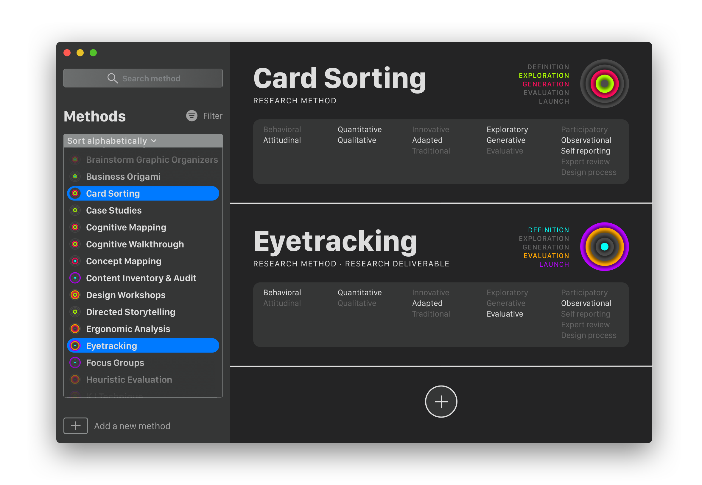
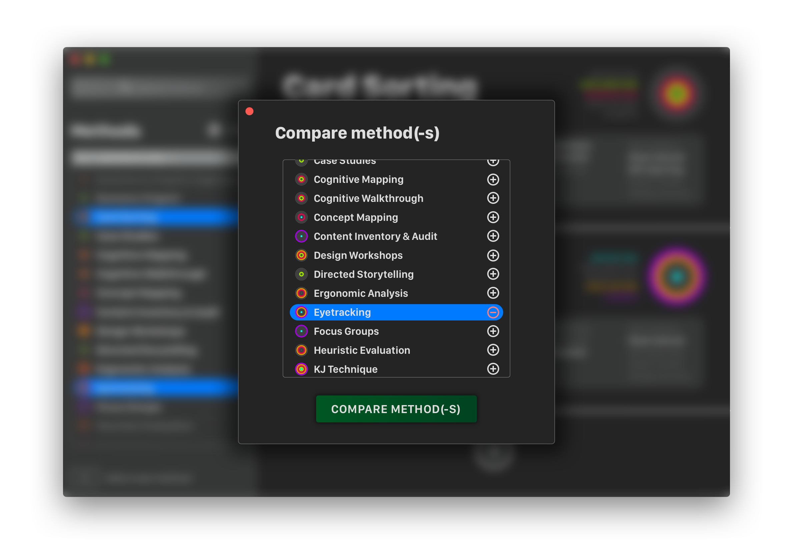

TDA497 Interaction Design Methodology course exercise. Master's Program in Interaction Design & Technologies, Fall 2020. Chalmers University of Technology.
Design a method toolbox considering the following constraints: it should be possible to add, remove, modify, etc. methods over time; it should be possible to use the methods as such, i.e. search, compare, sort them, to share them, to browse them in order to pick the right one, etc.; the toolbox should be able to support your design practice.
Please note that this exercise has been proposed in the beginning of the course.
My toolbox solution consists in an app that allows to add, remove or edit design methods over time. The toolbox integrates a search box: anytime a character is typed in, the methods list will be refreshed and will only contain the filtered methods. The list can be sorted alphabetically or manually. Another way to filter methods out is by clicking on the filter button: here you’ll be able to opt in any of the five design phases and find out which methods will be appropriate to use.
You may have noticed that any design method is paired with a label: this label is composed by five concentric circles, each one representing a design phase (the first phase corresponds to the innermost circle, while the last one corresponds to the outermost circle). Hence, the coloured circles will represent the design phases in which will be appropriate to use that design method.
Anytime one method is selected, it is possible to read its description and its properties. On the top right corner, it is also possible to access its dropdown option menu, which allows to edit, compare, share or delete the method.
The following view can be imagined to appear anytime you click on 'Add a new method': it will allows to fill the name of the method, an introductory phrase and its description; you will have to choose also at least on of the design phases and opt in the according properties. In case you want to import a method from an external file, you can click the text below the ‘Add method’ button.
A slightly modified version of View 2 can be used to edit an existing method: all the fields will be filled out with the existing data and ready to be edited.
Thanks to the 'Compare with…' button in the next view, it is possible to compare a design method with one or more others. In case you will need to compare a third method with the first two, you can just click on the + button. Hence, the last view will appear, which will allow to add to the comparison as many other methods as wanted; otherwise, it will also be possible to take away the current methods being compared.
 